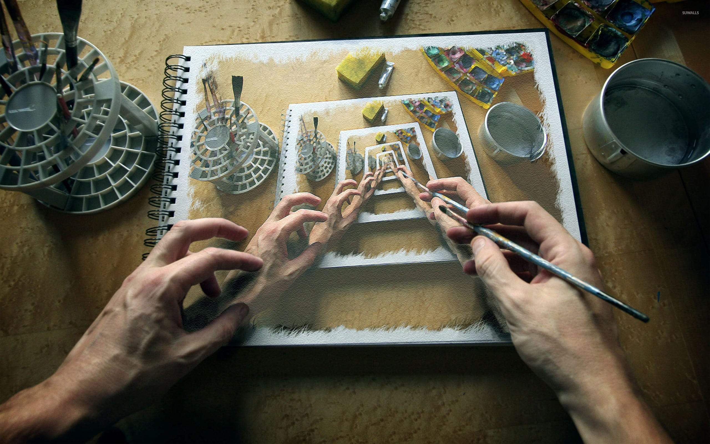

The Concept of Irony, with Continual References to References and Plato
That was a reference to Kierkegaard
Dec 04, 2021
Both computer science and mathematics make use of a technique called recursion. This technique has the unique property of being defined in terms of itself. The most common example of this is the factorial of a number. The factorial of any number n can be defined by the function “F” as F(n) = n * F(n - 1) with a '“base case” definition of F(1) = 1. This base case is what allows the function to return a value since without it the calculation would continue on ad infinitum. This function basically reads as saying the factorial of 4 F(4) is equal to 4 * the factorial of 3 * which is 3 * the factorial of 2 * which is 2 * the factorial of 1 which is 1. After the base case is reached we then move backward through the function so 1 is plugged in for the factorial of 1 and then we can solve for the factorial of 2 which is 2 * 1 and this process continues all the way up to the original number of n which is 4. This process of recursion is best visualized as a ‘stack’ which is exactly what it sounds like, it is a stack of pancakes and in order to get to the first pancake made you must work your way through the freshest pancake which is at the top of the stack of pancakes.
Recursive definitions or tautologies are one of the main problems of philosophic reasoning. The purpose of philosophy is to justify universal axioms that cannot be proven within the system of which it is an axiom. In a way, this problem can be thought of as finding the base case to a recursive function or finding some way to break out of tautological reasoning. The problem with this task and the reason philosophers are still in business is axioms like ‘the validity of reason’ are technically impossible to prove or at the very least impossible to prove ‘reasonably’ since if you allow the use of reason into an argument justifying reason then the man who claims to talk to God can validate his claim by saying God spoke to him and told him it was true. These types of problems are what makes philosophy interesting and what makes the difference between a great philosopher and a well-spoken schizophrenic almost impossible to distinguish between. At its core philosophy deals with infinity, recursion, paradox, and if it’s of the french variety bullshit mixed with psychoanalysis. Because of this the majority of modern philosophy has undergone a radical transformation and is now primarily concerned not with questions of truth, reality, and the absolute/god but with language and language games. This current trend in philosophy is deeply unsatisfying and it also seems to lead to an infinite snake eating its own tail type of recursion with no base case insight. All symbolic languages have this recursive definitional problem whether it be mathematics or linguistics neither can justify the axioms/definitions it uses to formulate proofs.
Every parent or older sibling has most likely experienced a child’s “why” phase. Philosophers never grow out of this phase but it is common for most children when they begin to learn about the world to incessantly ask the question “why”. What’s interesting about this phenomenon is not the repetitive string of questions but the annoyance and frustration this brings out of the parents. I’m not french so I’ll leave the psychoanalysis to someone who is but it does beg the question “why?” these parents get so annoyed. Is it all due to the pestering child repeating the same question over and over again or if it is because they don’t know how to answer the questions and are reminded of just how similarly clueless and unsatisfied they are with the answers they have been given despite a fancy degree, a white color job, and an Itunes library filled with unlistened to audiobooks and NPR podcasts that assure them that they have the answers.
The question “why?” is so haunting and so fundamental to philosophy because no matter where you start the road always leads back “because of God” if you’re a theist or “because of the big bang” if you’re an atheist before the two converge on a final “I don’t know” after another why is offered up to previous answers. It’s a fun game, see how many whys it takes to get to the center of the I don’t know. You can start with “why is the author still making this point we get it already” to “God” and “I don’t know in twenty whys or less depending on how lucid the person you’re talking to is. This is all to say that the annoying child is getting at something fundamental, and he is reminding us of our inability to justify our axioms and definitions through symbolic language even if we believe we know the answer intuitively. The problem isn’t necessarily the axioms themselves the problem is that language requires axioms in the first place. The devil is not in the details he is in our symbols.
In the beginning was the Word, and the Word was with God, and the Word was God. - John 1:1
I know, I know, everyone quotes John 1:1 it’s cliche, it’s uninspired, and despite being one of the best passages in the bible it is probably the single most overanalyzed sentence in human history. With that being said I have some thoughts on John 1:1 but that’s okay because I acknowledged it’s overplayed and brought attention to myself acknowledging that fact and if metaethics has taught us anything it’s that if it’s meta it’s good. The standard interpretation of the above passage is that Jesus is the word and since God speaks the world into existence it logically follows that, “in the beginning was the word”. This also fits because Jesus was (is?) the physical aspect of God with the Godhead being that which spoke and thus “was” (in the metaphysical sense not literally “was” since the Godhead is not a ‘thing’ and technically does not ‘exist’ in the proper usage of the word(see how we’re running into definitional problems)) before the beginning since beginning implies time and time implies matter and thus why the “word” is at the beginning but the Godhead is required to have ‘been’ before the word. This along with genesis seems to imply that God’s speech is synonymous with creation. God cannot speak in the traditional sense of the word for God’s word implies action. There are many quotes from the bible that support this but I am not a scholar or a theologian and this is not a piece on theology but I have included a link to a very noncredible-looking page that lists “38 verses of God speaking” the majority of which seem to corroborate my thesis with the exception of Exodus 20:19 which reads,
“Thus the Lord used to speak to Moses face to face, just as a man speaks to his friend.
Despite this one passage the overwhelming textual evidence seems to be on my side that God’s speech is distinct from human language as the thought of by humans and its use implies a determined generative reaction. It also just makes sense, this may not be the most philosophically rigorous or theologically profound argument but it does feel intuitively correct to assume that a supreme beings speech would not be linguistic or vocal and it would not be subject to translation ambiguity or interpretation and would instead be perfect i.e it would not need to inspire action it would be the action itself (unless of course, it spoke to inspire action in which case the action would be the instantaneous activation of this inspiration). I am not the first person to articulate this opinion and despite not being canonized into the Christian faith there is a long tradition in other religions and Christian heresy attributing the “voice” of God (the linguistic aspect of this God’s “speech”) to an angel specifically Metatron in Judaism and Christian heresy.
Unlike God, symbolic languages are imperfect because of their reliance on axioms that are unproven because of the proofs necessary reliance on these axioms thus making the proof tautological, and because our reliance on symbols and therefore definitions make certain questions unanswerable. But this is not the case for God or someone that could hypothetically speak like a God. What is meant by “speak like a God” is a form of speech without limits or symbols, a perfect and probably impossible form where communication no longer required translation and the subject receiving “the word” would not have to convert language into meaning but instead would be pure meaning and the speech would take the form of a mental process in the individual who is “listenings” mind if the point of the speech was purely communicative. No axioms would be required in such a speech because there is no reliance on any formal system in a sense the speech itself is the proof of its own axioms. The problem with our language is the reliance on definitions and symbols which are inherently terrible because of their tendency to lead to infinite regress since each definition and or symbol is made up of other symbols and or definitions that each have its own definition consisting of more definitions ad infinitum. In this way, language is slightly different than the basic example of recursion used at the beginning of this piece and functions more as a series of recursive functions that each call other recursive functions that call other recursive functions... etc. This is what leaves us unable to answer the child’s “why” because he can simply ask for the definition of each word forever. This is why we need the word of God, this is why we need a base case, this is why we need irony.
“Just as philosophy begins with doubt, so also a life that may be called human begins with irony”. - Kierkegaard
If irony is to be the path of salvation that leads us away from an infinite series of recursive calls we must first discuss what irony is. To avoid this infinite regress a definition of irony will not be presented but an example will be offered instead.
“It’s ironic Whitney Houston did all those Pepsi endorsements only to overdose on coke”.
Good joke, very funny, everyone laughs. What makes the joke ironic is that coke is both a soft drink that is in competition with Pepsi and a drug which is why it is ironic that she died from overdosing on “coke” despite being a paid advertiser for Pepsi. Explanations for these kinds of concepts are difficult to articulate (the explanation is just a restatement of the joke with added context) as they are almost entirely intuitive and can only really be grasped through examples. How do you explain that someone dying in the living room is ironic without just pointing out the fact that the living room has the word “living” in it which is the opposite of death? Does irony just mean the opposite? If that’s the case then the first example of irony is not technically ironic. Does it just mean saying something but meaning something else? If that’s the case then are all metaphors ironic, are misunderstandings, or an inability to articulate what you mean ironic? No explanation or definition can really “explain” what irony is the explanation here functions as a crude definition whereas the example is more a pointing at, which when strung together with enough pointers begins to make the concept implicitly clear without the need for a definition. Explaining to a child what irony is by reading out of Merian Webster’s dictionary would do little to alleviate his uncertainty (and what if he starts asking me for definitions within my definition?). Irony cannot be “explained” explicitly and an intuitive understanding does not begin to take hold in the child’s mind until enough examples are shown to him and he reaches that indescribable state of eureka or understanding. This understanding or knowledge that is indescribable is also what makes both of the above examples of irony not only ironic but also a joke. There is something inarticulable about both irony and humor which is why every explanation of a joke immediately ruins what made it funny. One could say perhaps ironically the task of philosophy is the attempt to write explanations for jokes that are themselves funnier than the original joke itself. What makes the concept of a joke so central to the idea of philosophy is that at its essence "the funny” is what cannot be articulated. A joke is told in words but the actual joke and what makes the comedian’s speech funny cannot be put into words. While not entirely the same as “speaking as a God” it is probably the closest we can get to possessing any sort of divine word. It is also important to note that although a comedian or ironist is not creating existence with their speech it does create immediate action in the person who “gets” the punchline or understands what makes overdosing on coke after staring in a Pepsi advertisement ironic. The audience at a comedy show doesn’t decide when to genuinely laugh, real laughter is uncontrollable and happens whether you want to or not which is often why someone will hold their mouth or shake their heads when they laugh at an offensive joke that they did not want to laugh at; At that moment they are not in control they were possessed by the joke or the “word” and were taken over by the speech and forced into an involuntary action. It is in this way that the ironist or the comedian’s word is equivalent to action and similar to ‘the word of God’.
This concept of irony, jokes, and attempting to speak as a God was most fully utilized not by Socrates but by Plato. Distinguishing Plato from Socrates is not trivial and confusing and conflating the two makes understanding the importance of both Plato and Socrates impossible. Plato is the author of the Socratic dialogues and although Socrates was a real man what we know about him is largely based on these fictional accounts of his life. The importance of this is crucial because when reading ‘The Republic’ or any other dialogue the purpose of the text is not to understand the philosophy of Socrates but of Plato. Plato did not write a historical account of Socrates’ life, he was not just reiterating his old teacher’s thoughts instead Plato was parodying Socrates and using irony to articulate his (Plato’s) philosophy, something that he understood could not be explicitly articulated through the use of symbols alone. Ironically this is probably more true to the philosophy of Socrates than any explicit philosophic dialogue or treatise could be. After all, the Socratic method is the practice of irony and of answering questions with questions. This method wasn’t a way for Socrates to avoid the question it was a philosophy in and of itself that believed the truth cannot be spoken, it was the belief that a symbol is distinct from that which it symbolizes. Truth cannot be articulated, a teacher can explain the right answer to a student but actual understanding is an individual feat that can only be undergone internally, and although some symbols may lead you towards the path of knowledge the journey must be undergone and completed solely by he who set out on it. If the truth or understanding could be communicated directly there would be no need for homework or example problems in a math class. The irony of this is of course that I just explained this explicitly but this is a simple truth and whether you “got it” or not was not exclusively predicated on the explanation, the explanation was merely an exit sign helping you get off at the correct destination it did not drive the car for you. This is the reason Plato does not write a treatise and instead opted to play the role of the author because as we will see below authorship is next to godliness.
In Plato’s infamous second letter he discusses the possibility of his dialogues ending up in the hands of idiots and the problems their interpretations of his work could bring into the world which he responds to by saying,
“The greatest safeguard is to avoid writing and to learn by heart; for it is not possible that what is written down should not get divulged. For this reason I myself have never yet written anything on these subjects, and no treatise by Plato exists or will exist”
At first glance, this quotation seems to be a confirmation of the Straussian interpretation of Plato’s use of irony. Ironically Strauss reads Plato too literally here. I do not want to give the impression that Strauss was entirely wrong since the final book/chapter of Plato’s Republic essentially writes Strauss’s thesis for him when in the dialogue Socrates switches the conversation from philosophy to a religious allegory when he realizes Glaucon and the others he is conversing with are unable to grasp his philosophy and if given the chance would turn The Republic into a dystopian nightmare. It is true Plato uses irony and story to protect the idiots from “the truth” (he even makes explicit reference to the noble lie within The Republic) but what is more interesting is that Plato is still able to convey his philosophy to those who can separate the symbol from the meaning through this ironic use of story to the point where Strauss can write an entire book explaining what Plato “really” meant. But what is sincerely lacking in the Straussian interpretation of Plato is the divine right of authorship. An author of a work of art is the closest a man can get to playing God. The author creates the world (“in the beginning was the word”) and even if he places himself into the story either as a narrator or as a fictionalized character in the story the author who is writing is not himself in the story. This has a nice parallel to Christianity where Jesus can be seen as the fictionalized character that the author/Godhead places inside the narrative. The parallels are so obvious between authorship and God that it seems nearly impossible that a thinker like Plato could have overlooked such an important isomorphism (I realize Plato’s writings came before the teachings of Christianity I mean the conception of God generally not just in Christianity. It is interesting to note that the authors of the Bible were most likely avid readers of Plato and most likely noticed this parallel as well). Plato even jokingly calls attention to his authorship and his lack of appearance within the story itself in works like the Phaedo where the final days of Socrates are being discussed and when recounting who was present in Socrates cell before his execution by hemlock Plato has a character explain why he was not present,
“Plato if I’m not mistaken was ill.”
which is quite ironic considering it is Plato who is writing this account and is thus present in some sense of the word and it is almost a certainty that Plato would have been present for such an event if in the real historical account the court allowed the disciples of Socrates to visit their teacher before he was put to death.
The method has been explained but it has not yet been demonstrated what Plato was trying to communicate using this synthetic version of speaking like a God. Like everything in Plato it always goes back to the allegory of the cave. The reason this is the most emblematic piece within Plato’s corpus has little to do with the content and everything to do with its presentation. The allegory of the cave is a narrative within a narrative where Socrates who is in a story written by Plato breaks into his own story which moves the reader into a second layer of speaking as a God making Plato’s “word” that much more clear by moving into a further layer of abstraction and irony. The allegory of the cave may actually be the most straightforward piece of Platonic writing and this is only possible because of this recursive call into further layers of irony allowing the reader more separation from symbol and into more direct contact with the “word” or pure meaning. For those who are unfamiliar with the allegory, it begins with a group of men who are chained inside a cave unable to move. For the men in the cave, their entire lives have been spent in bondage staring at the cave walls unable to move either their body or their head. The cave walls are illuminated by a fire where a group of artists works behind the scenes projecting shadows of things like animals onto the cave walls (clearly, Plato was a big fan of the Matrix movies). This continues until one day an unnamed troglodyte is no longer chained and the man wanders outside and sees the real world for the first time. It is never explicitly stated why or how the man was freed. After being freed from his bondage and upon exiting the cave the man enters into the real world and is unable to see as he is blinded by the sun. This forces the cave dweller to use a nearby body of water in order to see the world since his eyes are not yet adjusted to the natural light. After a while, the man’s eyes adjust and he can view the world without the aid of the water’s reflection. After spending some time outside the man decides he must go back into the cave and recount his newfound truth to his chained brothers and sisters. The prisoners of the cave refuse to believe the recently freed man and threaten to kill him if he sets them free. At the most shallow level of analysis, this is a story about enlightenment. At a higher level, the allegory is meant to serve as a Matrixesque metaphor for the Platonic forms and how this world is a shadow of the divine and how a truer world lies beyond the chains of our senses and materiality. The third layer is a metacommentary on the Socratic dialogue and the concept of irony/speaking as a God. The interpretation of the allegory as a metacommentary is most clearly elucidated by examining four aspects of the story.
1: Socrates is telling the story - The importance of this detail is that it creates the parallel to Plato telling the story of the Republic as a whole creating a stack in our minds which we can trace back from the top layer of the allegory of the cave to Socrates to the Republic to Plato’s authorship. This recursive call draws attention to the stack and creates a second-order observation allowing the reader to not only observe his role as a reader as equivalent to that of the prisoner but it makes the observation that this recognition of the reader as a prisoner is just another shadow on the wall of the multi-layered cave. The observation of the stack creates a second-order stack for us to observe.
Number two: It is never explained how or why the prisoner’s chains are unlocked - The unexplained freedom is important in the context of the third interpretation because this is not an allegory of the cave it is an allegory for Plato’s Republic and the breaking of the chains is a metaphor for understanding since this is what allows the prisoner to view the “truth”, and escape into the “real world”. But at the third layer this metaphor serves as a metaphor for how understanding and truth cannot be articulated(Socrates in another dialogue makes the argument (possibly ironically but definitely metaphorically) that all knowledge is a remembering) and so neither can the prisoners escape from bondage.
3: Sunlight blinds the troglodyte - Sunlight has always been a symbol for the divine and this story is no different except we must remember that Socrates and Plato are both philosophers and the God of philosophy is “truth”, ‘wisdom” and the “good” so this aspect of the story is yet another hint that what is true cannot be seen and it certainly cannot be talked about directly thus the reason Plato puts us into three layers of story to reveal the purpose of his philosophy and role as author. Like the prisoner, we too must view the truth through a reflection, the story is our water through which we may look at the real world. The problem with this is that the reflection is distinct from the “real world” and the “real world” is also distinct from its truth.
Number four: The man never considers the fact that this “real world” may be just another layer of the cave - This final aspect of the story demonstrates why ironic detachment is a necessity in philosophy. For us to realize the truth about the prisoner's “freedom” the prisoner cannot which is why neither Plato nor Socrates call our attention to the prisoner’s arrogance. If Plato through Socrates would explicitly tell us that the prisoner has just walked up into another layer of the cave it would lose all significance and meaning. The joke would be explained and all humor lost (Why aren’t you laughing?). Nietzsche does something similar in Thus Spoke Zarathustra near the end of the book when Zarathustra tells his disciples in the woods to stop following him and create their own paths. Whether intentional or not Nietzsche or rather Nietzsche through Zarathustra condemns his followers with this command and his followers are now doomed to follow Zarathustra by either rejecting his commands and continuing to follow in his footsteps or to follow his directions and create their own path which is now impossible because they are just following commands. Plato unlike Zarathustra does not damn his followers and allows them a path out of the cave by not telling them about its exit explicitly but by communicating it ironically ‘as a God’ and allowing the reader to on a surface level think they have already seen the light. Unfortunately for you, this author is not offering such luxuries to the reader of this Substack. Hope you like puppet shows and chains.
Since we cannot speak as a God irony and authorship must be used in order to imitate divine speech in order for regression to reach a base case. In order to create through the use of symbolic language, irony has to be used sparingly to get its point across since otherwise what is ironic becomes equivalent to sincerity. If everything is ironic nothing is and if irony is the norm then sincerity replaces irony. This makes Plato’s actual philosophy difficult if not impossible to untangle unless this is of course the point of the philosophy. It seems that it was Plato and not McCluhan who first realized that the “medium is the message” and that for any message other than the medium to be conveyed one must “speak” using no medium thus the employment of irony as a device to convey meaning implicitly and utilizing the closest thing we have to divine speech. Ironically the only medium capable of sincerity is irony since the message is outside of the medium, at least the medium of speech proper irony may be considered its own medium in which case the medium may still be the message at least ironically. What gives irony this unique property is that its message is not predicated on self-reference and it is not a recursive definition, it is communicated through irony but irony itself is the base case that allows the function to return the factorial and it is not defined in terms of the factorial function itself. Again, it is like a joke its words and explanations/definitions are not where the humor lies instead it is the revelation of noncommunicable understanding, for once the message is conveyed the humor leaves and the message is corrupted. Thus it is Kierkegaard and not Strauss who understood Plato’s task in the Socratic dialogues.
“If we ask what irony is we may say in general that it is a victory over the world; it is through a negation of the imperfect actuality that irony opens upa higher actuality”
The irony of all of this is that Kierkegaard in his masters. thesis ‘The Concept of Irony, with Continual References to Socrates’ seems to understand and favor the platonic medium of irony while explicitly articulating its message and unironically explaining the joke. This leads us back again to the problem of philosophy and the problem of this piece in general for seemingly Kierkegaard was understood since he was awarded a masters degree for his work and although I’m under no impression that my work will be as seminal as Kierkegaard’s I am under the impression that I too am being understood. I don’t know what to make of this other than to say “if you understand what I’m saying you are probably missing the point” and maybe this is the real irony.